5.3 Nichtdeterministische Endliche Automaten./course1/wly/05/03-nfsm.wly:2:11
5.3 Nichtdeterministische Endliche Automaten./course1/wly/05/03-nfsm.wly:2:11
Ein nichtdeterministischer Automat ist, informell./course1/wly/05/03-nfsm.wly:4:5 ausgedrückt, wie ein deterministischer Automat, nur dass es./course1/wly/05/03-nfsm.wly:5:5 für eine Zustand-Symbol-Kombination beliebig viele./course1/wly/05/03-nfsm.wly:6:5 ausgehende Pfeile (eventuell gar keinen) geben kann. Hier./course1/wly/05/03-nfsm.wly:7:5 ist das Beispiel von vorhin, leicht abgewandelt:./course1/wly/05/03-nfsm.wly:8:5
Ein Pfeil beschreibt also nicht unbedingt einen./course1/wly/05/03-nfsm.wly:15:5 Zustandsübergang, der ./course1/wly/05/03-nfsm.wly:16:5geschieht./course1/wly/05/03-nfsm.wly:16:28,./course1/wly/05/03-nfsm.wly:16:38 sondern einen, der./course1/wly/05/03-nfsm.wly:16:38 ./course1/wly/05/03-nfsm.wly:17:5möglich./course1/wly/05/03-nfsm.wly:17:6 ist. Formal gesprochen ist ./course1/wly/05/03-nfsm.wly:17:14$\delta$./course1/wly/05/03-nfsm.wly:17:42 nun keine./course1/wly/05/03-nfsm.wly:17:50 Funktion mehr, sondern eine ./course1/wly/05/03-nfsm.wly:18:5Relation./course1/wly/05/03-nfsm.wly:18:34:./course1/wly/05/03-nfsm.wly:18:43
Definition 5.3.1 (Nichtdeterministischer endlicher Automat,./course1/wly/05/03-nfsm.wly:20:5 non-deterministic finite state machine)./course1/wly/05/03-nfsm.wly:22:9 Ein./course1/wly/05/03-nfsm.wly:22:49 nichtdeterministischer endlicher Automat besteht aus./course1/wly/05/03-nfsm.wly:23:9
einem endlichen Eingabealphaet ./course1/wly/05/03-nfsm.wly:27:17$\Sigma$./course1/wly/05/03-nfsm.wly:27:48,./course1/wly/05/03-nfsm.wly:27:56
einer endlichen Menge ./course1/wly/05/03-nfsm.wly:30:17$Q$./course1/wly/05/03-nfsm.wly:30:39 von Zuständen,./course1/wly/05/03-nfsm.wly:30:42
einem Startzustand ./course1/wly/05/03-nfsm.wly:33:17$\qstart \in Q$./course1/wly/05/03-nfsm.wly:33:36,./course1/wly/05/03-nfsm.wly:33:51
einer Menge ./course1/wly/05/03-nfsm.wly:36:17$F \subseteq Q$./course1/wly/05/03-nfsm.wly:36:29 von akzeptierenden./course1/wly/05/03-nfsm.wly:36:44 Endzuständen,./course1/wly/05/03-nfsm.wly:37:17
einer Zustandsübergangsrelation./course1/wly/05/03-nfsm.wly:40:17 ./course1/wly/05/03-nfsm.wly:41:17$\delta \subseteq Q \times \Sigma \times Q$./course1/wly/05/03-nfsm.wly:41:17 ../course1/wly/05/03-nfsm.wly:41:60
Formal gesehen ist also ein Automat ein Quintupel./course1/wly/05/03-nfsm.wly:43:9 ./course1/wly/05/03-nfsm.wly:44:9$M = (\Sigma, Q, \qstart, F, \delta)$./course1/wly/05/03-nfsm.wly:44:9../course1/wly/05/03-nfsm.wly:44:46
Von nun an bezeichnen wir endliche Automaten auch als./course1/wly/05/03-nfsm.wly:46:5 ./course1/wly/05/03-nfsm.wly:47:5deterministische./course1/wly/05/03-nfsm.wly:47:6 endliche Automaten, um den Unterschied./course1/wly/05/03-nfsm.wly:47:23 zu den nichtdeterministischen zu verdeutlichen. Wenn in./course1/wly/05/03-nfsm.wly:48:5 einem deterministischen endlichen Automaten./course1/wly/05/03-nfsm.wly:49:5 ./course1/wly/05/03-nfsm.wly:50:5$\delta(q,x) = q'$./course1/wly/05/03-nfsm.wly:50:5 war, so hatte das die Bedeutung ./course1/wly/05/03-nfsm.wly:50:23wenn./course1/wly/05/03-nfsm.wly:50:57 der Automat im Zustand ./course1/wly/05/03-nfsm.wly:51:5$q$./course1/wly/05/03-nfsm.wly:51:28 ist und ./course1/wly/05/03-nfsm.wly:51:31$x$./course1/wly/05/03-nfsm.wly:51:40 liest, so geht er./course1/wly/05/03-nfsm.wly:51:43 in Zustand ./course1/wly/05/03-nfsm.wly:52:5$q'$./course1/wly/05/03-nfsm.wly:52:16 über./course1/wly/05/03-nfsm.wly:52:20;./course1/wly/05/03-nfsm.wly:52:26 wenn nun in einem./course1/wly/05/03-nfsm.wly:52:26 nichtdeterministischen Automaten ./course1/wly/05/03-nfsm.wly:53:5$(q,x,q') \in \delta$./course1/wly/05/03-nfsm.wly:53:38 ./course1/wly/05/03-nfsm.wly:53:59 gilt, so bedeutet das, ./course1/wly/05/03-nfsm.wly:54:5wenn der Automat im Zustand ./course1/wly/05/03-nfsm.wly:54:29$q$./course1/wly/05/03-nfsm.wly:54:57 ./course1/wly/05/03-nfsm.wly:54:60 ist und ./course1/wly/05/03-nfsm.wly:55:5$x$./course1/wly/05/03-nfsm.wly:55:13 liest, so kann er in Zustand ./course1/wly/05/03-nfsm.wly:55:16$q'$./course1/wly/05/03-nfsm.wly:55:46 übergehen./course1/wly/05/03-nfsm.wly:55:50../course1/wly/05/03-nfsm.wly:55:61 ./course1/wly/05/03-nfsm.wly:55:61 Analog zu den deterministischen Automaten definieren wir./course1/wly/05/03-nfsm.wly:56:5 eine erweiterte Zustandsübergangsrelation../course1/wly/05/03-nfsm.wly:57:5
Definition 5.3.2 (Erweiterte Zuständsübergangsfunktion)./course1/wly/05/03-nfsm.wly:59:5../course1/wly/05/03-nfsm.wly:60:49 Für einen./course1/wly/05/03-nfsm.wly:60:49 nichtdeterministischen endlichen Automaten./course1/wly/05/03-nfsm.wly:61:9 ./course1/wly/05/03-nfsm.wly:62:9$(\Sigma, Q, \qstart, F, \delta)$./course1/wly/05/03-nfsm.wly:62:9 definieren wir die./course1/wly/05/03-nfsm.wly:62:42 ./course1/wly/05/03-nfsm.wly:63:9erweiterte Zustandsübergangsrelation./course1/wly/05/03-nfsm.wly:63:10 ./course1/wly/05/03-nfsm.wly:63:47 ./course1/wly/05/03-nfsm.wly:64:9$\hat{\delta}\subseteq Q \times \Sigma^* \rightarrow Q$./course1/wly/05/03-nfsm.wly:64:9 ./course1/wly/05/03-nfsm.wly:64:64 als die Menge aller Zustand-Wort-Zustand-Tripel./course1/wly/05/03-nfsm.wly:65:9 ./course1/wly/05/03-nfsm.wly:66:9$(q,x_1 x_2 \dots x_n,q')$./course1/wly/05/03-nfsm.wly:66:9,./course1/wly/05/03-nfsm.wly:66:35 für die wir Zwischenzustände./course1/wly/05/03-nfsm.wly:66:35 ./course1/wly/05/03-nfsm.wly:67:9$q = \qstart, q_1, q_2, \dots, q_n = q'$./course1/wly/05/03-nfsm.wly:67:9 finden können mit./course1/wly/05/03-nfsm.wly:67:49
Dies schließt den Fall ./course1/wly/05/03-nfsm.wly:74:9$n = 0$./course1/wly/05/03-nfsm.wly:74:32 mit ein, also./course1/wly/05/03-nfsm.wly:74:39 ./course1/wly/05/03-nfsm.wly:75:9$(q, \epsilon, q) \in \hat{\delta}$./course1/wly/05/03-nfsm.wly:75:9../course1/wly/05/03-nfsm.wly:75:44 Wie zuvor schreiben./course1/wly/05/03-nfsm.wly:75:44 wir ./course1/wly/05/03-nfsm.wly:76:9$q \stackrel{\alpha}{\rightarrow} q'$./course1/wly/05/03-nfsm.wly:76:13../course1/wly/05/03-nfsm.wly:76:50 Die von ./course1/wly/05/03-nfsm.wly:76:50$M$./course1/wly/05/03-nfsm.wly:76:60 ./course1/wly/05/03-nfsm.wly:76:63 akzeptierte Sprache ist./course1/wly/05/03-nfsm.wly:77:9
Beobachtung 5.3.3./course1/wly/05/03-nfsm.wly:85:5 ./course1/wly/05/03-nfsm.wly:85:5 Sei ./course1/wly/05/03-nfsm.wly:86:9$M = (\Sigma, Q, \qstart, F, \delta)$./course1/wly/05/03-nfsm.wly:86:13 ein./course1/wly/05/03-nfsm.wly:86:50 nichtdeterministischer endlicher Automat. Dann gibt es eine./course1/wly/05/03-nfsm.wly:87:9 reguläre Grammatik ./course1/wly/05/03-nfsm.wly:88:9$G$./course1/wly/05/03-nfsm.wly:88:28 mit ./course1/wly/05/03-nfsm.wly:88:31$L(G) = L(M)$./course1/wly/05/03-nfsm.wly:88:36../course1/wly/05/03-nfsm.wly:88:49
Wir führen hier den Beweis nicht noch einmal; er ist mehr./course1/wly/05/03-nfsm.wly:90:5 oder weniger identisch mit dem Beweis von ./course1/wly/05/03-nfsm.wly:91:5Theorem 5.2.6; wir haben nämlich in jenem Beweis./course1/wly/05/03-nfsm.wly:92:5 nirgends verwendet, dass ./course1/wly/05/03-nfsm.wly:93:5$\delta$./course1/wly/05/03-nfsm.wly:93:30 eine ./course1/wly/05/03-nfsm.wly:93:38Funktion./course1/wly/05/03-nfsm.wly:93:45 ist, und./course1/wly/05/03-nfsm.wly:93:54 daher geht mit einem ./course1/wly/05/03-nfsm.wly:94:5$\delta$./course1/wly/05/03-nfsm.wly:94:26,./course1/wly/05/03-nfsm.wly:94:34 das eine ./course1/wly/05/03-nfsm.wly:94:34Relation./course1/wly/05/03-nfsm.wly:94:46 ist,./course1/wly/05/03-nfsm.wly:94:55 alles ganz genau gleich. Allerdings gilt nun auch der./course1/wly/05/03-nfsm.wly:95:5 Umkehrschluss: zu einer regulären Grammatik gibt es einen./course1/wly/05/03-nfsm.wly:96:5 nichtdeterministischen endlichen Automaten:./course1/wly/05/03-nfsm.wly:97:5
Theorem 5.3.4./course1/wly/05/03-nfsm.wly:99:5 ./course1/wly/05/03-nfsm.wly:99:5 Sei ./course1/wly/05/03-nfsm.wly:100:9$G = (\Sigma, N, P, S)$./course1/wly/05/03-nfsm.wly:100:13 eine reguläre Grammatik. Dann./course1/wly/05/03-nfsm.wly:100:36 gibt es einen nichtdeterministischen endlichen Automaten./course1/wly/05/03-nfsm.wly:101:9 ./course1/wly/05/03-nfsm.wly:102:9$M$./course1/wly/05/03-nfsm.wly:102:9 mit ./course1/wly/05/03-nfsm.wly:102:12$L(G) = L(M)$./course1/wly/05/03-nfsm.wly:102:17../course1/wly/05/03-nfsm.wly:102:30
Beweis Unser Automat hat als Zustandsmenge ./course1/wly/05/03-nfsm.wly:105:9$N$./course1/wly/05/03-nfsm.wly:105:45,./course1/wly/05/03-nfsm.wly:105:48 die Menge der./course1/wly/05/03-nfsm.wly:105:48 nichtterminalen Symbole und als Startzustand ./course1/wly/05/03-nfsm.wly:106:9$S$./course1/wly/05/03-nfsm.wly:106:54,./course1/wly/05/03-nfsm.wly:106:57 das./course1/wly/05/03-nfsm.wly:106:57 Startsymbol der Grammatik ./course1/wly/05/03-nfsm.wly:107:9$G$./course1/wly/05/03-nfsm.wly:107:35../course1/wly/05/03-nfsm.wly:107:38 Wir definieren ./course1/wly/05/03-nfsm.wly:107:38$\delta$./course1/wly/05/03-nfsm.wly:107:55,./course1/wly/05/03-nfsm.wly:107:63 ./course1/wly/05/03-nfsm.wly:107:63 indem wir jeden ./course1/wly/05/03-nfsm.wly:108:9$G$./course1/wly/05/03-nfsm.wly:108:25 -Pfeil in einem ./course1/wly/05/03-nfsm.wly:108:28$M$./course1/wly/05/03-nfsm.wly:108:45-Pfeil./course1/wly/05/03-nfsm.wly:108:48 umwandeln:./course1/wly/05/03-nfsm.wly:108:48 eine Produktion./course1/wly/05/03-nfsm.wly:109:9
in ./course1/wly/05/03-nfsm.wly:116:9$G$./course1/wly/05/03-nfsm.wly:116:12 wird dann zu./course1/wly/05/03-nfsm.wly:116:15
also einem Pfeil ./course1/wly/05/03-nfsm.wly:122:9$X \stackrel{a}{\rightarrow} Y$./course1/wly/05/03-nfsm.wly:122:26 in ./course1/wly/05/03-nfsm.wly:122:57$M$./course1/wly/05/03-nfsm.wly:122:61../course1/wly/05/03-nfsm.wly:122:64 ./course1/wly/05/03-nfsm.wly:122:64 Für jede Regel der Form ./course1/wly/05/03-nfsm.wly:123:9$X \rightarrow \epsilon$./course1/wly/05/03-nfsm.wly:123:33 machen./course1/wly/05/03-nfsm.wly:123:57 wir ./course1/wly/05/03-nfsm.wly:124:9$X$./course1/wly/05/03-nfsm.wly:124:13 zu einem Endzustand. Was aber mit Regeln der Form./course1/wly/05/03-nfsm.wly:124:16 ./course1/wly/05/03-nfsm.wly:125:9$X \rightarrow Y$./course1/wly/05/03-nfsm.wly:125:9?./course1/wly/05/03-nfsm.wly:125:26 Hierfür könnte man./course1/wly/05/03-nfsm.wly:125:26 Nichtdeterministische Automaten mit ./course1/wly/05/03-nfsm.wly:126:9$\epsilon$./course1/wly/05/03-nfsm.wly:126:45 -Übergängen./course1/wly/05/03-nfsm.wly:126:55 definieren, die also vom Zustand ./course1/wly/05/03-nfsm.wly:127:9$X$./course1/wly/05/03-nfsm.wly:127:42 nach ./course1/wly/05/03-nfsm.wly:127:45$Y$./course1/wly/05/03-nfsm.wly:127:51 wechseln./course1/wly/05/03-nfsm.wly:127:54 können, ohne ein Eingabesymbol zu lesen; wir gehen hier./course1/wly/05/03-nfsm.wly:128:9 einen anderen Weg und verweisen auf ./course1/wly/05/03-nfsm.wly:129:9Theorem 5.1.7, welches uns erlaubt, Regeln./course1/wly/05/03-nfsm.wly:130:9 der Form ./course1/wly/05/03-nfsm.wly:131:9$X \rightarrow Y$./course1/wly/05/03-nfsm.wly:131:18 und ./course1/wly/05/03-nfsm.wly:131:35$X \rightarrow a$./course1/wly/05/03-nfsm.wly:131:40 zu./course1/wly/05/03-nfsm.wly:131:57 eliminieren../course1/wly/05/03-nfsm.wly:132:9A\(\square\)
Beispiel 5.3.5./course1/wly/05/03-nfsm.wly:134:5 ./course1/wly/05/03-nfsm.wly:134:5 Wir betrachten abermals die reguläre Grammatik aus dem./course1/wly/05/03-nfsm.wly:135:9 vorherigen ./course1/wly/05/03-nfsm.wly:136:9Kapitel 5.1.3:./course1/wly/05/03-nfsm.wly:136:9
und auch den (falschen) endlichen Automaten, den wir im./course1/wly/05/03-nfsm.wly:143:9 letzten Kapitel dafür gebaut haben:./course1/wly/05/03-nfsm.wly:144:9
Wir sehen nun, dass dies genau der nichtdeterministische./course1/wly/05/03-nfsm.wly:151:9 Automat ist, den wir nach Theorem >>#theorem-nfsm-regular./course1/wly/05/03-nfsm.wly:152:9 bauen können. Die Zustandsübergangsrelation ./course1/wly/05/03-nfsm.wly:153:9$\delta$./course1/wly/05/03-nfsm.wly:153:53 ist./course1/wly/05/03-nfsm.wly:153:61
Jeder Zustand ist ein Endzustand, allerdings heißt das./course1/wly/05/03-nfsm.wly:160:9 nicht, dass der Automat jedes Wort akzeptiert. Für./course1/wly/05/03-nfsm.wly:161:9 ./course1/wly/05/03-nfsm.wly:162:9$\alpha = ba$./course1/wly/05/03-nfsm.wly:162:9 beispielsweise gibt es keinen Zustand ./course1/wly/05/03-nfsm.wly:162:22$q$./course1/wly/05/03-nfsm.wly:162:61 ./course1/wly/05/03-nfsm.wly:162:64 mit ./course1/wly/05/03-nfsm.wly:163:9$S \stackrel{ba}{\rightarrow} q$./course1/wly/05/03-nfsm.wly:163:13,./course1/wly/05/03-nfsm.wly:163:45 geschweige denn./course1/wly/05/03-nfsm.wly:163:45 einen akzeptierenden Endzustand. Daher gilt:./course1/wly/05/03-nfsm.wly:164:9 ./course1/wly/05/03-nfsm.wly:165:9$ba \not \in L(M)$./course1/wly/05/03-nfsm.wly:165:9../course1/wly/05/03-nfsm.wly:165:27
Beispiel 5.3.6./course1/wly/05/03-nfsm.wly:167:5 ./course1/wly/05/03-nfsm.wly:167:5 Wir betrachten die reguläre Grammatik aus ./course1/wly/05/03-nfsm.wly:168:9Übungsaufgabe 5.1.7:./course1/wly/05/03-nfsm.wly:169:9
Bevor wir einen nichtdeterministischen Automaten bauen./course1/wly/05/03-nfsm.wly:176:9 können, müssen wir erst die Produktionen der Form./course1/wly/05/03-nfsm.wly:177:9 ./course1/wly/05/03-nfsm.wly:178:9$X \rightarrow Y$./course1/wly/05/03-nfsm.wly:178:9 eliminieren bzw. ersetzen. Wenn Sie./course1/wly/05/03-nfsm.wly:178:26 Aufgabe 4.1.7 gelöst haben, haben Sie wahrscheinlich in./course1/wly/05/03-nfsm.wly:179:9 etwa folgende Grammatik erhalten:./course1/wly/05/03-nfsm.wly:180:9
Also insgesamt 11 statt 8 Produktionen. Alle./course1/wly/05/03-nfsm.wly:188:9 Nichtterminale erlauben auf ihrer rechten Seite ein./course1/wly/05/03-nfsm.wly:189:9 ./course1/wly/05/03-nfsm.wly:190:9$\epsilon$./course1/wly/05/03-nfsm.wly:190:9 und werden so zu akzeptierenden Zuständen. Die./course1/wly/05/03-nfsm.wly:190:19 Zustandsübergangsrelation ./course1/wly/05/03-nfsm.wly:191:9$\delta$./course1/wly/05/03-nfsm.wly:191:35 ist also./course1/wly/05/03-nfsm.wly:191:43
Der nichtdeterminische Automat schaut also so aus:./course1/wly/05/03-nfsm.wly:199:9
Übungsaufgabe 5.3.1./course1/wly/05/03-nfsm.wly:206:5 ./course1/wly/05/03-nfsm.wly:206:5 Sei ./course1/wly/05/03-nfsm.wly:208:9$\Sigma = \{1\}$./course1/wly/05/03-nfsm.wly:208:13 und./course1/wly/05/03-nfsm.wly:208:29 ./course1/wly/05/03-nfsm.wly:209:9\(L_k := \{1^n \ | \textnormal{ $n$ ist durch $k$ teilbar}\}\)./course1/wly/05/03-nfsm.wly:209:9 ./course1/wly/05/03-nfsm.wly:210:21 . Schreiben Sie für ./course1/wly/05/03-nfsm.wly:211:9$L_k$./course1/wly/05/03-nfsm.wly:211:29 einen deterministischen./course1/wly/05/03-nfsm.wly:211:34 endlichen Automaten. Schreiben Sie eine reguläre Grammatik./course1/wly/05/03-nfsm.wly:212:9 für die Sprache ./course1/wly/05/03-nfsm.wly:213:9$L_5 \cup L_7$./course1/wly/05/03-nfsm.wly:213:25,./course1/wly/05/03-nfsm.wly:213:39 also die Strings aus 1,./course1/wly/05/03-nfsm.wly:213:39 deren Länge durch 5 oder durch 7 teilbar ist. Zeichnen Sie./course1/wly/05/03-nfsm.wly:214:9 nun einen nichtdeterministischen endlichen Automaten für./course1/wly/05/03-nfsm.wly:215:9 ./course1/wly/05/03-nfsm.wly:216:9$L_5 \cup L_7$./course1/wly/05/03-nfsm.wly:216:9../course1/wly/05/03-nfsm.wly:216:23
Wir werden nun zeigen, dass man zu jedem./course1/wly/05/03-nfsm.wly:222:5 nichtdeterministischen Automaten ./course1/wly/05/03-nfsm.wly:223:5$M$./course1/wly/05/03-nfsm.wly:223:38 einen äquivalenten./course1/wly/05/03-nfsm.wly:223:41 deterministischen Automaten ./course1/wly/05/03-nfsm.wly:224:5$M'$./course1/wly/05/03-nfsm.wly:224:33 bauen kann. Bevor wir./course1/wly/05/03-nfsm.wly:224:37 eine allgemeine Konstruktion zeigen, fragen wir uns, wie./course1/wly/05/03-nfsm.wly:225:5 wir beispielsweise für den nichtdeterministischen endlichen./course1/wly/05/03-nfsm.wly:226:5 Automaten ./course1/wly/05/03-nfsm.wly:227:5$M$./course1/wly/05/03-nfsm.wly:227:15:./course1/wly/05/03-nfsm.wly:227:18
und das Eingabewort ./course1/wly/05/03-nfsm.wly:234:5$\alpha = 1001100$./course1/wly/05/03-nfsm.wly:234:25 überprüfen können,./course1/wly/05/03-nfsm.wly:234:43 ob ./course1/wly/05/03-nfsm.wly:235:5$1001100 \in L(M)$./course1/wly/05/03-nfsm.wly:235:8 gilt. Einem determinischen endlichen./course1/wly/05/03-nfsm.wly:235:26 Automaten können wir ja das Eingabewort einfach füttern und./course1/wly/05/03-nfsm.wly:236:5 schauen, was der Automat tut; bei nichtdeterministischen./course1/wly/05/03-nfsm.wly:237:5 Automaten müssen wir schauen, was er alles tun könnte. Wir./course1/wly/05/03-nfsm.wly:238:5 plazieren einen kleinen farbigen Punkt in jeden Zustand, in./course1/wly/05/03-nfsm.wly:239:5 dem sich der Automat befinden könnte; am Anfang hat der./course1/wly/05/03-nfsm.wly:240:5 Startzustand ./course1/wly/05/03-nfsm.wly:241:5$A$./course1/wly/05/03-nfsm.wly:241:18 einen roten Punkt../course1/wly/05/03-nfsm.wly:241:21
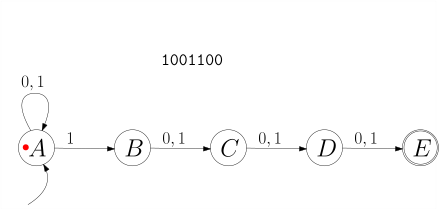
course1/public/img/finite-state-automata/nfsm-colored-balls-01.svg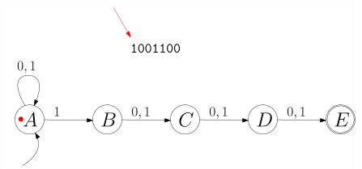
course1/public/img/finite-state-automata/nfsm-colored-balls-02.svg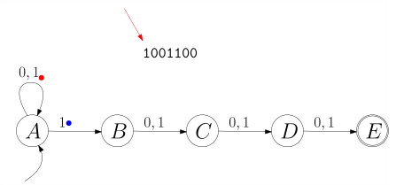
course1/public/img/finite-state-automata/nfsm-colored-balls-03.svg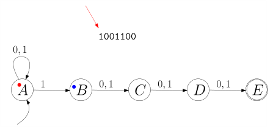
course1/public/img/finite-state-automata/nfsm-colored-balls-04.svg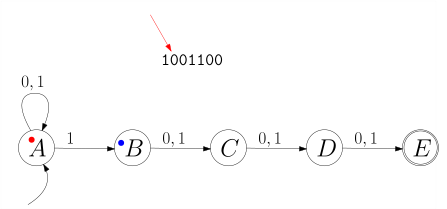
course1/public/img/finite-state-automata/nfsm-colored-balls-05.svg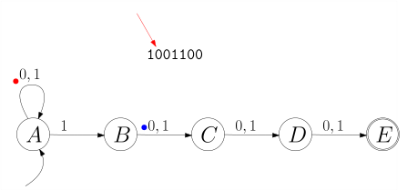
course1/public/img/finite-state-automata/nfsm-colored-balls-06.svg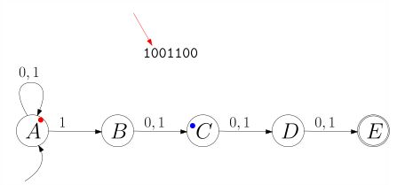
course1/public/img/finite-state-automata/nfsm-colored-balls-07.svg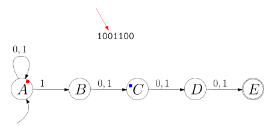
course1/public/img/finite-state-automata/nfsm-colored-balls-08.svg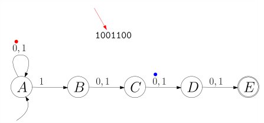
course1/public/img/finite-state-automata/nfsm-colored-balls-09.svg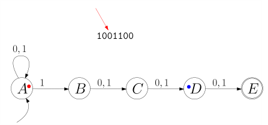
course1/public/img/finite-state-automata/nfsm-colored-balls-10.svg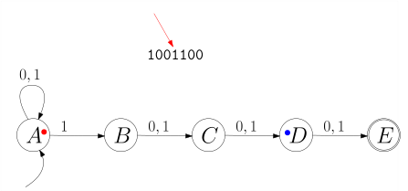
course1/public/img/finite-state-automata/nfsm-colored-balls-11.svg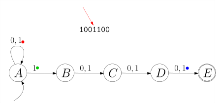
course1/public/img/finite-state-automata/nfsm-colored-balls-12.svg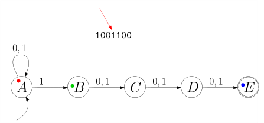
course1/public/img/finite-state-automata/nfsm-colored-balls-13.svg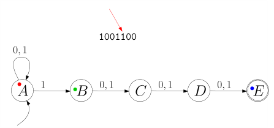
course1/public/img/finite-state-automata/nfsm-colored-balls-14.svg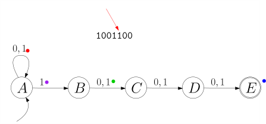
course1/public/img/finite-state-automata/nfsm-colored-balls-15.svg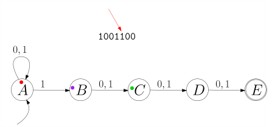
course1/public/img/finite-state-automata/nfsm-colored-balls-16.svg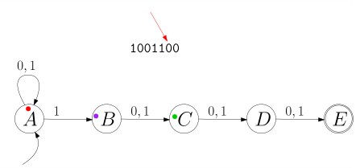
course1/public/img/finite-state-automata/nfsm-colored-balls-17.svg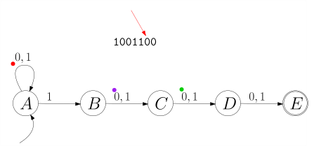
course1/public/img/finite-state-automata/nfsm-colored-balls-18.svg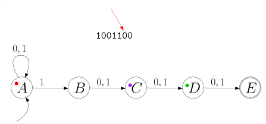
course1/public/img/finite-state-automata/nfsm-colored-balls-19.svg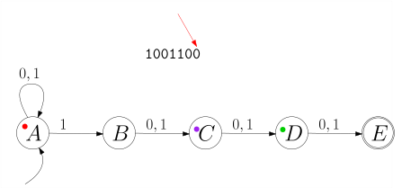
course1/public/img/finite-state-automata/nfsm-colored-balls-20.svg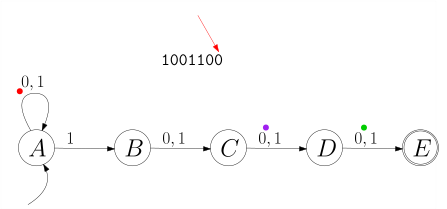
course1/public/img/finite-state-automata/nfsm-colored-balls-21.svg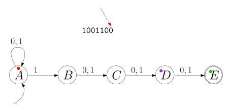
course1/public/img/finite-state-automata/nfsm-colored-balls-22.svgAm Ende landet der grüne Punkt im Zustand ./course1/wly/05/03-nfsm.wly:267:5$E$./course1/wly/05/03-nfsm.wly:267:47../course1/wly/05/03-nfsm.wly:267:50 Das Wort./course1/wly/05/03-nfsm.wly:267:50 ist also in ./course1/wly/05/03-nfsm.wly:268:5$L(M)$./course1/wly/05/03-nfsm.wly:268:17../course1/wly/05/03-nfsm.wly:268:23 Das können wir auch ganz allgemein./course1/wly/05/03-nfsm.wly:268:23 tun. Wenn Zustand ./course1/wly/05/03-nfsm.wly:269:5$q$./course1/wly/05/03-nfsm.wly:269:23 einen "Punkt" hat und Zeichen ./course1/wly/05/03-nfsm.wly:269:26$x$./course1/wly/05/03-nfsm.wly:269:57 ./course1/wly/05/03-nfsm.wly:269:60 gelesen wird, dann teilt sich dieser Punkt und plaziert./course1/wly/05/03-nfsm.wly:270:5 einen Kind-Punkt in jedem Zustand ./course1/wly/05/03-nfsm.wly:271:5$q'$./course1/wly/05/03-nfsm.wly:271:39,./course1/wly/05/03-nfsm.wly:271:43 für den./course1/wly/05/03-nfsm.wly:271:43 ./course1/wly/05/03-nfsm.wly:272:5$q \stackrel{x}{\rightarrow} q'$./course1/wly/05/03-nfsm.wly:272:5 gilt. Formal gesprochen:./course1/wly/05/03-nfsm.wly:272:37 für eine Menge ./course1/wly/05/03-nfsm.wly:273:5$R \subseteq Q$./course1/wly/05/03-nfsm.wly:273:20 von Zuständen (die, die./course1/wly/05/03-nfsm.wly:273:35 gerade einen "Punkt" haben) und ein Eingabe-Symbol ./course1/wly/05/03-nfsm.wly:274:5$x$./course1/wly/05/03-nfsm.wly:274:56 ./course1/wly/05/03-nfsm.wly:274:59 definieren wir./course1/wly/05/03-nfsm.wly:275:5
Für ein Eingabewort ./course1/wly/05/03-nfsm.wly:282:5$\alpha= x_1 \dots x_n$./course1/wly/05/03-nfsm.wly:282:25 fangen wir nun./course1/wly/05/03-nfsm.wly:282:48 mit ./course1/wly/05/03-nfsm.wly:283:5$R_0 = \{\qstart\}$./course1/wly/05/03-nfsm.wly:283:9 an, das entspricht dem einen roten./course1/wly/05/03-nfsm.wly:283:28 Punkt auf dem Startzustand, und berechnen dann jeweils./course1/wly/05/03-nfsm.wly:284:5 ./course1/wly/05/03-nfsm.wly:285:5$R_i = \Delta(R_{i-1}, x_i)$./course1/wly/05/03-nfsm.wly:285:5;./course1/wly/05/03-nfsm.wly:285:33 wenn die Menge ./course1/wly/05/03-nfsm.wly:285:33$R_n$./course1/wly/05/03-nfsm.wly:285:50 einen./course1/wly/05/03-nfsm.wly:285:55 akzeptierenden Endzustand enthält (dieser also am Ende./course1/wly/05/03-nfsm.wly:286:5 einen "Punkt" hat), gilt ./course1/wly/05/03-nfsm.wly:287:5$\alpha \in L(M)$./course1/wly/05/03-nfsm.wly:287:30../course1/wly/05/03-nfsm.wly:287:47 Treten Sie./course1/wly/05/03-nfsm.wly:287:47 einen Schritt zurück und betrachten, was wir mit ./course1/wly/05/03-nfsm.wly:288:5$\Delta$./course1/wly/05/03-nfsm.wly:288:54 ./course1/wly/05/03-nfsm.wly:288:62 definiert haben: wir haben eine Zustandsübergangsfunktion./course1/wly/05/03-nfsm.wly:289:5 definiert, die nun aber nicht auf Zuständen sondern auf./course1/wly/05/03-nfsm.wly:290:5 ./course1/wly/05/03-nfsm.wly:291:5Zustands./course1/wly/05/03-nfsm.wly:291:5mengen./course1/wly/05/03-nfsm.wly:291:14 operiert. Das heißt, im Gegensatz zu./course1/wly/05/03-nfsm.wly:291:21 ./course1/wly/05/03-nfsm.wly:292:5$\delta$./course1/wly/05/03-nfsm.wly:292:5,./course1/wly/05/03-nfsm.wly:292:13 das eine Funktion./course1/wly/05/03-nfsm.wly:292:13 ./course1/wly/05/03-nfsm.wly:293:5$\delta: Q \times \Sigma \rightarrow Q$./course1/wly/05/03-nfsm.wly:293:5 ist, ist./course1/wly/05/03-nfsm.wly:293:44
Wenn Sie die Schreibweise ./course1/wly/05/03-nfsm.wly:299:5$2^Q$./course1/wly/05/03-nfsm.wly:299:31 nicht kennen: dies ist die./course1/wly/05/03-nfsm.wly:299:36 Potenzmenge von ./course1/wly/05/03-nfsm.wly:300:5$Q$./course1/wly/05/03-nfsm.wly:300:21,./course1/wly/05/03-nfsm.wly:300:24 also die Menge aller Untermengen, was./course1/wly/05/03-nfsm.wly:300:24 die leere Menge ./course1/wly/05/03-nfsm.wly:301:5$\emptyset$./course1/wly/05/03-nfsm.wly:301:21 und die "volle Menge" ./course1/wly/05/03-nfsm.wly:301:32$Q$./course1/wly/05/03-nfsm.wly:301:55 ./course1/wly/05/03-nfsm.wly:301:58 selbst miteinschließt. Wir haben also folgendes Theorem:./course1/wly/05/03-nfsm.wly:302:5
Theorem 5.3.7 (Einen nichtdeterministischen endlichen Automaten./course1/wly/05/03-nfsm.wly:304:5 deterministisch machen)../course1/wly/05/03-nfsm.wly:307:9 Sei./course1/wly/05/03-nfsm.wly:307:34 ./course1/wly/05/03-nfsm.wly:308:9$M = (\Sigma, Q, \qstart, F, \delta)$./course1/wly/05/03-nfsm.wly:308:9 ein./course1/wly/05/03-nfsm.wly:308:46 nichtdeterministischer Automat; dann heiße der./course1/wly/05/03-nfsm.wly:309:9 deterministische Automat./course1/wly/05/03-nfsm.wly:310:9 ./course1/wly/05/03-nfsm.wly:311:9$M' = (\Sigma, 2^Q, \{\qstart\}, \mathcal{F}, \Delta)$./course1/wly/05/03-nfsm.wly:311:9 mit./course1/wly/05/03-nfsm.wly:311:63 Endzustandsmenge ./course1/wly/05/03-nfsm.wly:312:9$\mathcal{F}$./course1/wly/05/03-nfsm.wly:312:26 definiert als./course1/wly/05/03-nfsm.wly:312:39
und Zustandsübergangsfunktion ./course1/wly/05/03-nfsm.wly:319:9$\Delta$./course1/wly/05/03-nfsm.wly:319:39 definiert als./course1/wly/05/03-nfsm.wly:319:47
der ./course1/wly/05/03-nfsm.wly:327:9Potenzmengenautomat./course1/wly/05/03-nfsm.wly:327:14../course1/wly/05/03-nfsm.wly:327:34 Es gilt ./course1/wly/05/03-nfsm.wly:327:34$L(M) = L(M')$./course1/wly/05/03-nfsm.wly:327:44../course1/wly/05/03-nfsm.wly:327:58
Wir folgern also./course1/wly/05/03-nfsm.wly:329:5
Theorem 5.3.8./course1/wly/05/03-nfsm.wly:331:5 ./course1/wly/05/03-nfsm.wly:331:5 Zu jeder regulären Sprache ./course1/wly/05/03-nfsm.wly:333:9$L$./course1/wly/05/03-nfsm.wly:333:36 gibt es einen./course1/wly/05/03-nfsm.wly:333:39 deterministischen endlichen Automaten ./course1/wly/05/03-nfsm.wly:334:9$M$./course1/wly/05/03-nfsm.wly:334:47 mit ./course1/wly/05/03-nfsm.wly:334:50$L(M) = L$./course1/wly/05/03-nfsm.wly:334:55../course1/wly/05/03-nfsm.wly:334:65
Beispiel 5.3.9./course1/wly/05/03-nfsm.wly:336:5 ./course1/wly/05/03-nfsm.wly:336:5 Der obige nichtdeterminische Automaten ./course1/wly/05/03-nfsm.wly:337:9$M$./course1/wly/05/03-nfsm.wly:337:48,./course1/wly/05/03-nfsm.wly:337:51 der die./course1/wly/05/03-nfsm.wly:337:51 Sprache aller Wörter, deren viertletztes Zeichen eine 1./course1/wly/05/03-nfsm.wly:338:9 ist, akzeptiert, hat fünf Zustände. Sein./course1/wly/05/03-nfsm.wly:339:9 Potenzmengenautomat ./course1/wly/05/03-nfsm.wly:340:9$M'$./course1/wly/05/03-nfsm.wly:340:29 hätte also ./course1/wly/05/03-nfsm.wly:340:33$2^5 = 32$./course1/wly/05/03-nfsm.wly:340:45../course1/wly/05/03-nfsm.wly:340:55 Allerdings./course1/wly/05/03-nfsm.wly:340:55 sehen wir, dass alle "relevanten" Zustände von ./course1/wly/05/03-nfsm.wly:341:9$M$./course1/wly/05/03-nfsm.wly:341:56 den./course1/wly/05/03-nfsm.wly:341:59 Zustand ./course1/wly/05/03-nfsm.wly:342:9$A$./course1/wly/05/03-nfsm.wly:342:17 enthalten. Dieser wird nie verschwinden. Also./course1/wly/05/03-nfsm.wly:342:20 sehen wir, dass man ./course1/wly/05/03-nfsm.wly:343:9$M'$./course1/wly/05/03-nfsm.wly:343:29 mit 16 Zuständen implementieren./course1/wly/05/03-nfsm.wly:343:33 kann (die anderen, die, die nicht ./course1/wly/05/03-nfsm.wly:344:9$A$./course1/wly/05/03-nfsm.wly:344:43 enthalten, sind./course1/wly/05/03-nfsm.wly:344:46 ./course1/wly/05/03-nfsm.wly:345:9unerreichbar./course1/wly/05/03-nfsm.wly:345:10)../course1/wly/05/03-nfsm.wly:345:23 Da 16 immer noch recht groß für eine./course1/wly/05/03-nfsm.wly:345:23 Abbildung ist, nehmen wir uns die Sprache aller Wörter,./course1/wly/05/03-nfsm.wly:346:9 deren ./course1/wly/05/03-nfsm.wly:347:9drittletztes Zeichen./course1/wly/05/03-nfsm.wly:347:16 eine 1 ist. Der./course1/wly/05/03-nfsm.wly:347:37 nichtdeterministische Automat hierfür ist./course1/wly/05/03-nfsm.wly:348:9
Der Potenzmengenautomat hat die Zustandsmenge./course1/wly/05/03-nfsm.wly:355:9
wobei wir der Lesbarkeit halber ./course1/wly/05/03-nfsm.wly:361:9$\{A,B\}$./course1/wly/05/03-nfsm.wly:361:41 etc. schreiben../course1/wly/05/03-nfsm.wly:361:50 Um bei der Konstruktion des Potenzmengenautomaten unnötige./course1/wly/05/03-nfsm.wly:362:9 Zustände zu vermeiden, bauen wir ihn Schritt für Schritt,./course1/wly/05/03-nfsm.wly:363:9 angefangen mit dem Startzustand ./course1/wly/05/03-nfsm.wly:364:9$\{A\}$./course1/wly/05/03-nfsm.wly:364:41 bzw. ./course1/wly/05/03-nfsm.wly:364:48$A$./course1/wly/05/03-nfsm.wly:364:54,./course1/wly/05/03-nfsm.wly:364:57 und./course1/wly/05/03-nfsm.wly:364:57 hängen jedem Zustand einen ausgehenden ./course1/wly/05/03-nfsm.wly:365:9$0$./course1/wly/05/03-nfsm.wly:365:48 -Pfeil und./course1/wly/05/03-nfsm.wly:365:51 ./course1/wly/05/03-nfsm.wly:366:9$1$./course1/wly/05/03-nfsm.wly:366:9-Pfeil./course1/wly/05/03-nfsm.wly:366:12 an, wobei wir womöglich neue Zustände./course1/wly/05/03-nfsm.wly:366:12 "entdecken"../course1/wly/05/03-nfsm.wly:367:9
Wenn wir uns vorstellen, dass wir vor das Eingabewort./course1/wly/05/03-nfsm.wly:388:9 ./course1/wly/05/03-nfsm.wly:389:9$\alpha$./course1/wly/05/03-nfsm.wly:389:9 die Zeichen 000 stellen, also ./course1/wly/05/03-nfsm.wly:389:17$\alpha$./course1/wly/05/03-nfsm.wly:389:48 durch./course1/wly/05/03-nfsm.wly:389:56 ./course1/wly/05/03-nfsm.wly:390:9$000\alpha$./course1/wly/05/03-nfsm.wly:390:9 ersetzen, dann codiert jeder Zustand genau die./course1/wly/05/03-nfsm.wly:390:20 letzten drei Zeichen des Eingabewortes, die der Automat./course1/wly/05/03-nfsm.wly:391:9 gelesen hat. Der Zustand ./course1/wly/05/03-nfsm.wly:392:9$ACD$./course1/wly/05/03-nfsm.wly:392:34 bedeutet zum Beispiel ./course1/wly/05/03-nfsm.wly:392:39die./course1/wly/05/03-nfsm.wly:392:63 letzten drei Zeichen waren ./course1/wly/05/03-nfsm.wly:393:9$110$./course1/wly/05/03-nfsm.wly:393:36../course1/wly/05/03-nfsm.wly:393:42
Im folgenden Unterkapitel werden wir alle./course1/wly/05/03-nfsm.wly:395:5 Transformationen, die wir bisher gesehen haben, an einem./course1/wly/05/03-nfsm.wly:396:5 konkreten Beispiel anwenden../course1/wly/05/03-nfsm.wly:397:5